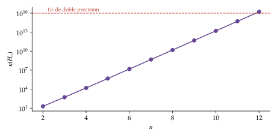

Parcial 3 · Ecuaciones diferenciales y sistemas lineales
Para arrancarSimular el clima, un puente o una red eléctrica termina en un sistema lineal de millones de ecuaciones. La eliminación gaussiana con pivoteo es la herramienta, y su costo, 32n3, manda.
Resolver Ax=b es, probablemente, el problema más frecuente de la computación científica: aparece al discretizar ecuaciones diferenciales, en los splines (capítulo 7), en mínimos cuadrados y en optimización. Un método directo da la solución exacta (salvo redondeo) en un número finito de operaciones.
19.1 Eliminación gaussiana
Se usan las operaciones elementales sobre la matriz aumentada [A∣b]: para k=1,…,n−1 y i>k, Ei←Ei−mikEk con el multiplicadormik=akk(k)aik(k). Al final queda un sistema triangular superior Ux=c, que se resuelve por sustitución regresiva: xn=unncn,xi=uii1(ci−j>i∑uijxj).
La eliminación gaussiana requiere 3n3+O(n2) multiplicaciones y divisiones, y la sustitución regresiva 2n2+O(n).
Con n=1000 son unos 3×108 productos: menos de un segundo en un computador moderno. La regla de Cramer, en cambio, exige n+1 determinantes; calculados por cofactores costarían del orden de (n+1)! operaciones.
Con cuatro cifras, el sistema 0,003000x1+59,14x2=59,17,5,291x1−6,130x2=46,78 tiene solución x1=10, x2=1. Con el pivote 0,003000, m21=1764 y se obtiene x2=1,001, ¡pero x1=−10,00! El pequeño error en x2 se multiplica por 0,00359,14 al despejar x1.
En el paso k se intercambia la fila k con la fila p≥k que tiene el mayor ∣apk(k)∣. Así todos los multiplicadores cumplen ∣mik∣≤1.
Con pivoteo parcial el ejemplo anterior da x1=10,00, x2=1,000. El pivoteo escalado compara ∣apk∣/sp, con sp el mayor elemento de la fila p, para no dejarse engañar por filas multiplicadas por constantes grandes.
19.3 Factorización LU
Si la eliminación se hace sin intercambios, los multiplicadores forman una matriz triangular inferior L con unos en la diagonal, y A=LU. Para resolver Ax=b se resuelven Ly=b (sustitución progresiva) y Ux=y (regresiva). La ventaja: si hay que resolver con muchos b distintos, la factorización (costo 3n3) se hace una sola vez y cada solución cuesta n2.
Si la eliminación gaussiana se puede hacer sin intercambios (en particular, si A es estrictamente diagonal dominante o simétrica definida positiva), A=LU. En general existe una matriz de permutación P con PA=LU.
A es estrictamente diagonal dominante si ∣aii∣>∑j=i∣aij∣ para todo i, y simétrica definida positiva si A=At y xtAx>0 para todo x=0. Las definidas positivas admiten la factorización de CholeskyA=LLt, con la mitad del costo.
Prueba que una matriz estrictamente diagonal dominante es invertible.
Soluciónintenta primero
Si Ax=0 con x=0, sea k con ∣xk∣=max∣xj∣>0. De la fila k, akkxk=−∑j=kakjxj, y ∣akk∣∣xk∣≤∑j=k∣akj∣∣xk∣, es decir ∣akk∣≤∑j=k∣akj∣, contradicción.
🔎 Profundiza: cuando la matriz no ayuda (Hilbert)
La matriz de Hilbert Hn=(i+j−11) parece inofensiva, pero su número de condición crece explosivamente. Una regla práctica: al resolver Hnx=b se pierden unas log10κ(Hn) cifras.

Hn: para n=12 supera 1016 y ya no queda ninguna cifra confiable en doble precisión." style="width:560px;max-width:100%" loading="lazy">Número de condición de Hn: para n=12 supera 1016 y ya no queda ninguna cifra confiable en doble precisión.
Con n=6, κ≈1,5×107: de las 16 cifras de la máquina quedan unas 9. Con n=12, ninguna. Ningún pivoteo lo arregla: el problema está mal condicionado, no el algoritmo.
Ojo, parcero: errores que veo en los parciales
pivote diminuto sin intercambiar → pivoteo parcial: el de mayor módulo
factorizar LU para cada b → factorizas una vez y resuelves muchos b
✦Practica activa
Retos para afianzar las ideas del capítulo: experimenta en el laboratorio y arma la demostración con los bloques en el orden correcto y caza el paso falso de un argumento.
🔬 Taller de Gauss–JordanElimina con pivoteo
Resuelve con pivoteo parcial: intercambia primero para tener el mayor pivote. x+2y+z=4,3x+y+2z=6,2x+3y+4z=9.
🧩 Ordena la soluciónFactorización LU
Factoriza A=(2415) como LU.
🔍 Encuentra el errorPivoteo
Se resuelve (10−20111)x=(12) en aritmética flotante.
✎ Repaso del capítulo
El costo de la eliminación gaussiana es…
Del orden de 3n3 multiplicaciones.
Si resolver un sistema de n=1000 tarda 1 s, ¿cuánto tarda n=2000 (s)?
puedes escribir fracciones como 3/2
El costo crece como n3: duplicar n multiplica por 23=8, así que 8 s.
En pivoteo parcial se escoge como pivote…
El de mayor módulo de la columna, para no dividir entre números pequeños.
LU existe sin pivoteo para toda matriz invertible.
(0110) es invertible pero el primer pivote es 0: no tiene LU sin pivoteo. Falso.